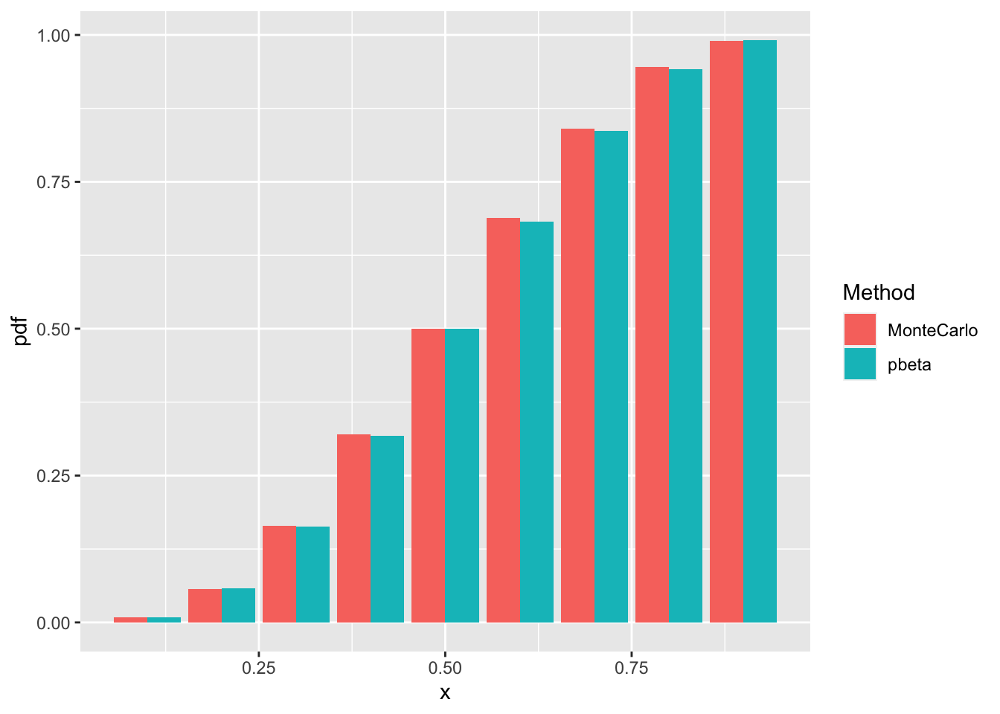

Coursework
STA 4241: Statistical Learning, Spring 2022
Homework #1
Homework #1
January 26, 2022
Question 1
To find the least squares solution for \(\beta_0\) and \(\beta_1\) in simple linear regression, we must minimize the sum of squared residuals for \(Y=\beta_0+\beta_1X\) by minimizing \(\sum_{i=1}^n(Y_i-(\hat{\beta}_0+\hat{\beta}_1X_i))^2\). To begin, we will minimize the function with respect to \(\hat{\beta}_0\): \[\frac{\partial}{\partial\hat{\beta}_0}\sum_{i=1}^n(Y_i-(\hat{\beta}_0+\hat{\beta}_1X_i))^2=\sum_{i=1}^n\frac{\partial}{\partial\hat{\beta}_0}(Y_i-(\hat{\beta}_0+\hat{\beta}_1X_i))^2\] \[=\sum_{i=1}^n2(Y_i-(\hat{\beta}_0+\hat{\beta}_1X_i))(-1)=-2\sum_{i=1}^n(Y_i-(\hat{\beta}_0+\hat{\beta}_1X_i))\] Next, we will solve for \(\hat{\beta}_0\) when the derivative equals 0: \[-2\sum_{i=1}^n(Y_i-(\hat{\beta}_0+\hat{\beta}_1X_i))=0\Rightarrow\sum_{i=1}^n(Y_i-(\hat{\beta}_0+\hat{\beta}_1X_i))=0\] \[=\sum_{i=1}^nY_i-\sum_{i=1}^n\hat{\beta}_0-\sum_{i=1}^n\hat{\beta}_1X_i=\sum_{i=1}^nY_i-n\hat{\beta}_0-\hat{\beta}_1\sum_{i=1}^nX_i=0\] \[n\hat{\beta}_0=\sum_{i=1}^nY_i-\hat{\beta}_1\sum_{i=1}^nX_i\] \[\hat{\beta}_0=\bar{Y}-\hat{\beta}_1\bar{X}\] Thus, the least squares solution for \(\beta_0\) is \(\hat{\beta}_0=\bar{Y}-\hat{\beta}_1\bar{X}\). Next, we will minimize \(\sum_{i=1}^n(Y_i-(\hat{\beta}_0+\hat{\beta}_1X_i))^2\) with respect to \(\hat{\beta}_1\): \[\frac{\partial}{\partial\hat{\beta}_1}\sum_{i=1}^n(Y_i-(\hat{\beta}_0+\hat{\beta}_1X_i))^2=\sum_{i=1}^n\frac{\partial}{\partial\hat{\beta}_1}(Y_i-(\hat{\beta}_0+\hat{\beta}_1X_i))^2\] \[=\sum_{i=1}^n2(Y_i-(\hat{\beta}_0+\hat{\beta}_1X_i))(-X_i)=-2\sum_{i=1}^nX_i(Y_i-(\hat{\beta}_0+\hat{\beta}_1X_i))\] Next, we will solve for \(\hat{\beta}_1\) when the derivative equals 0: \[-2\sum_{i=1}^nX_i(Y_i-(\hat{\beta}_0+\hat{\beta}_1X_i))=0\Rightarrow\sum_{i=1}^nX_i(Y_i-(\hat{\beta}_0+\hat{\beta}_1X_i))=0\] Since we know that \(\hat{\beta}_0=\bar{Y}-\hat{\beta}_1\bar{X}\), we can substitute it into the above equation and get \[\sum_{i=1}^nX_i(Y_i-(\bar{Y}-\hat{\beta}_1\bar{X}+\hat{\beta}_1X_i))=\sum_{i=1}^nX_i(Y_i-\bar{Y}-\hat{\beta}_1(X_i-\bar{X}))\] \[=\sum_{i=1}^nX_i(Y_i-\bar{Y})-\sum_{i=1}^n\hat{\beta}_1X_i(X_i-\bar{X})=0\] \[\sum_{i=1}^nX_i(Y_i-\bar{Y})=\hat{\beta}_1\sum_{i=1}^nX_i(X_i-\bar{X})\Rightarrow\hat{\beta}_1=\frac{\sum_{i=1}^nX_i(Y_i-\bar{Y})}{\sum_{i=1}^nX_i(X_i-\bar{X})}\] \[\hat{\beta}_1=\frac{\sum_{i=1}^n(X_i-\bar{X})(Y_i-\bar{Y})}{\sum_{i=1}^n(X_i-\bar{X})^2}\] Thus, the least squares solution for \(\beta_1\) is \(\hat{\beta}_1=\frac{\sum_{i=1}^n(X_i-\bar{X})(Y_i-\bar{Y})}{\sum_{i=1}^n(X_i-\bar{X})^2}\).
Question 2
If we use the Bayes classifier using the known probability above, we expect the error rates to be similar between the training and test data sets because they follow the same distribution.
The error rate for the training data is
yhat_train = as.numeric(pnorm(0.5*x1[1:500] - 0.4*x2[1:500]) >= 0.5)
mean(y[1:500] != yhat_train)## [1] 0.328The error rate for the testing data is
yhat_test = as.numeric(pnorm(0.5*x1[501:1000] - 0.4*x2[501:1000]) >= 0.5)
mean(y[501:1000] != yhat_test)## [1] 0.312- The test error rate when using KNN with \(k = 3\) to classify the outcomes in the test data set is
knnTrain = cbind(x1[1:500], x2[1:500])
knnTest = cbind(x1[501:1000], x2[501:1000])
knnMod = knn(train=knnTrain, test=knnTest, k=3, cl=y[1:500])
knnPred = as.numeric(knnMod) - 1
mean(knnPred != y[501:1000])## [1] 0.386Given the test error rate in part (iii) and the error rates found in part (ii), I do not think \(k=3\) is the best choice of \(k\) because it has a greater error rate than the Bayes classifier.
The plot showing the test error rate as a function of \(k\) is below.
error_vals = 0
for (k_val in 1:50) {
knnMod = knn(train=knnTrain, test=knnTest, k=k_val, cl=y[1:500])
knnPred = as.numeric(knnMod) - 1
error_vals[k_val] = mean(knnPred != y[501:1000])
}
knn_errors = data.frame(x = c(1:50), y = error_vals)
ggplot(data=knn_errors, aes(x=x, y=y)) + geom_line()+ geom_point() +
labs(x = "K-value", y = "Error Rate")
I think the best choice of \(k\) is likely between 35 and 45 because this is where the error rate stabilizes at around 0.32.
I believe that KNN does a good job at approximating the Bayes classifier in this data set because the error rate falls between about 0.45 and 0.32, which is close to what the error rate is for the testing data using the Bayes classifier.
The test error rate when we include the additional 20 covariates and use KNN with \(k=40\) is:
knnTrain = cbind(x1[1:500], x2[1:500], xrandom[1:500])
knnTest = cbind(x1[501:1000], x2[501:1000], xrandom[501:1000])
knnMod = knn(train = knnTrain, test = knnTest, k = 40, cl = y[1:500])
knnPred = as.numeric(knnMod) - 1
mean(knnPred != y[501:1000])## [1] 0.344- The previous part tells us that including extraneous predictors in our model causes the KNN algorithm to perform worse. The error rate is higher when we include the additional 20 random predictors.
Question 3
- The linear regression model that aims to predict Today using lags 1-5, Year, and Volume:
mod = lm(Today ~ Lag1 + Lag2 + Lag3 + Lag4 + Lag5 + factor(Year) + Volume, data = Smarket)I included Year as a categorical variable in my model because there are only 5 levels (years 2001-2005). R would read it as a continuous variable had I not done this, which would affect my estimates.
The model summary is below.
summary(mod)##
## Call:
## lm(formula = Today ~ Lag1 + Lag2 + Lag3 + Lag4 + Lag5 + factor(Year) +
## Volume, data = Smarket)
##
## Residuals:
## Min 1Q Median 3Q Max
## -4.9039 -0.6494 0.0187 0.5866 5.6225
##
## Coefficients:
## Estimate Std. Error t value Pr(>|t|)
## (Intercept) -0.101032 0.161837 -0.624 0.533
## Lag1 -0.031093 0.028416 -1.094 0.274
## Lag2 -0.014610 0.028464 -0.513 0.608
## Lag3 -0.007029 0.028407 -0.247 0.805
## Lag4 -0.011074 0.028422 -0.390 0.697
## Lag5 -0.038052 0.028127 -1.353 0.176
## factor(Year)2002 -0.063032 0.105082 -0.600 0.549
## factor(Year)2003 0.148313 0.104582 1.418 0.156
## factor(Year)2004 0.079240 0.105248 0.753 0.452
## factor(Year)2005 0.032578 0.131108 0.248 0.804
## Volume 0.043872 0.117897 0.372 0.710
##
## Residual standard error: 1.137 on 1239 degrees of freedom
## Multiple R-squared: 0.006222, Adjusted R-squared: -0.001799
## F-statistic: 0.7757 on 10 and 1239 DF, p-value: 0.6525The test statistic is \(F=0.7757\). The p-value of obtaining this test statistic with \(df_1=10\), \(df_2=1239\) is \(0.6525\). Because this p-value is greater than all common alpha levels, I fail to reject the null hypothesis that \(\beta_1=...=\beta_{10}=0\).
- The model with the same covariates and including lag 1 in the model with a three degree of freedom polynomial is:
lag1mod = lm(Today ~ poly(Lag1, 3) + Lag2 + Lag3 + Lag4 + Lag5 + factor(Year) + Volume,
data = Smarket)
summary(lag1mod)##
## Call:
## lm(formula = Today ~ poly(Lag1, 3) + Lag2 + Lag3 + Lag4 + Lag5 +
## factor(Year) + Volume, data = Smarket)
##
## Residuals:
## Min 1Q Median 3Q Max
## -4.9054 -0.6410 0.0183 0.5853 5.6312
##
## Coefficients:
## Estimate Std. Error t value Pr(>|t|)
## (Intercept) -0.105622 0.165598 -0.638 0.524
## poly(Lag1, 3)1 -1.249910 1.142025 -1.094 0.274
## poly(Lag1, 3)2 -0.142793 1.259568 -0.113 0.910
## poly(Lag1, 3)3 0.341677 1.145983 0.298 0.766
## Lag2 -0.015232 0.028572 -0.533 0.594
## Lag3 -0.007392 0.028589 -0.259 0.796
## Lag4 -0.011426 0.028474 -0.401 0.688
## Lag5 -0.037783 0.028208 -1.339 0.181
## factor(Year)2002 -0.063926 0.105490 -0.606 0.545
## factor(Year)2003 0.146177 0.105390 1.387 0.166
## factor(Year)2004 0.075023 0.107842 0.696 0.487
## factor(Year)2005 0.025512 0.137310 0.186 0.853
## Volume 0.048849 0.122472 0.399 0.690
##
## Residual standard error: 1.138 on 1237 degrees of freedom
## Multiple R-squared: 0.006302, Adjusted R-squared: -0.003337
## F-statistic: 0.6538 on 12 and 1237 DF, p-value: 0.7966The model does not fit better than the model that includes lag 1 linearly. With a test statistic of \(F=0.6538\) and p-value \(0.7966\), we would again fail to reject the null hypothesis that none of the predictors are significant.
- The smallest test set error I could achieve was around \(0.47\).
set.seed(123)
sample = sample(seq_len(nrow(Smarket)), size = 625)
training = Smarket[sample,]
testing = Smarket[-sample,]
knnMarket = knn(train=training[,1:7], test=testing[,1:7], k=42, cl=training$Direction)
mean(knnMarket != testing$Direction)## [1] 0.4752- The test above tells me that our covariates are not very predictive of the outcome. We are performing about as well as we would be if we were flipping a coin to decide if the market went up or down.
Question 4
No, these two confidence intervals are not the same. The confidence interval for the randomly chosen individual with \(X=x_0\) will be wider than the confidence interval for the average value of the outcome among subjects with \(X=x_0\). This is due to the irreducible error \(\epsilon\) that we have when predicting the outcome for an individual.
Yes, the widths of both confidence intervals go 0 as \(n\rightarrow\infty\) since \(n\) is in the denominator of both margins of error. As \(n\) increases, the intervals will eventually become single numbers (the estimates of the average and the randomly chosen individual) and the margin of error approaches 0.
Homework #2
Homework #2
February 9, 2022
Question 1
Assuming that our outcome \(Y\) is binary and that we have only covariate \(x\), quadratic discriminant analysis implies a logistic regression model of the form \[\log\left(\frac{P(Y=1|X=x)}{1-P(Y=1|X=x)}\right)=\log\left(\frac{P(Y=1|X=x)}{P(Y=0|X=x)}\right)\] \[=\log\left[\frac{\frac{\pi_1}{(2\pi)^{p/2}|\Sigma_1|^{1/2}}\exp\left(-\frac{1}{2}(x-\mu_1)^2\Sigma_1^{-1}\right)}{\sum_{K=0}^1\frac{\pi_K}{(2\pi)^{p/2}|\Sigma_K|^{1/2}}\exp\left(-\frac{1}{2}(x-\mu_K)^2\Sigma_K^{-1}\right)}\cdot\frac{\sum_{K=0}^1\frac{\pi_K}{(2\pi)^{p/2}|\Sigma_K|^{1/2}}\exp\left(-\frac{1}{2}(x-\mu_K)^2\Sigma_K^{-1}\right)}{\frac{\pi_0}{(2\pi)^{p/2}|\Sigma_0|^{1/2}}\exp\left(-\frac{1}{2}(x-\mu_0)^2\Sigma_0^{-1}\right)}\right]\] \[=\log\left[\frac{\frac{\pi_1}{(2\pi)^{p/2}|\Sigma_1|^{1/2}}\exp\left(-\frac{1}{2}(x-\mu_1)^2\Sigma_1^{-1}\right)}{\frac{\pi_0}{(2\pi)^{p/2}|\Sigma_0|^{1/2}}\exp\left(-\frac{1}{2}(x-\mu_0)^2\Sigma_0^{-1}\right)}\right]=\log\left[\frac{\pi_1|\Sigma_0|^{1/2}}{\pi_0|\Sigma_1|^{1/2}}\exp\left(-\frac{1}{2}\left((x-\mu_1)^2\Sigma_1^{-1}-(x-\mu_0)^2\Sigma_0^{-1}\right)\right)\right]\] \[=\log\left[\frac{\pi_1|\Sigma_0|^{1/2}}{\pi_0|\Sigma_1|^{1/2}}\right]-\frac{1}{2}\left((x-\mu_1)^2\Sigma_1^{-1}-(x-\mu_0)^2\Sigma_0^{-1}\right)=\log\left[\frac{\pi_1|\Sigma_0|^{1/2}}{\pi_0|\Sigma_1|^{1/2}}\right]-\frac{1}{2}\left(\frac{x^2-2x\mu_1+\mu_1^2}{\Sigma_1}-\frac{x^2-2x\mu_0+\mu_0^2}{\Sigma_0}\right)\] \[=\log\left[\frac{\pi_1|\Sigma_0|^{1/2}}{\pi_0|\Sigma_1|^{1/2}}\right]-\frac{1}{2}\left(\frac{x^2\Sigma_0-2x\mu_1\Sigma_0+\mu_1^2\Sigma_0-x^2\Sigma_1+2x\mu_0\Sigma_1-\mu_0^2\Sigma_1}{\Sigma_1\Sigma_0}\right)\] \[=\log\left[\frac{\pi_1|\Sigma_0|^{1/2}}{\pi_0|\Sigma_1|^{1/2}}\right]-\frac{1}{2\Sigma_1\Sigma_0}\left(x^2(\Sigma_0-\Sigma_1)-2x(\mu_1\Sigma_0-\mu_0\Sigma_1)+\mu_1^2\Sigma_0-\mu_0^2\Sigma_1\right)\] \[=\log\left[\frac{\pi_1|\Sigma_0|^{1/2}}{\pi_0|\Sigma_1|^{1/2}}\right]-\frac{\mu_1^2}{2\Sigma_1}+\frac{\mu_0^2}{2\Sigma_0}+\frac{\mu_1\Sigma_0-\mu_0\Sigma_1}{\Sigma_1\Sigma_0}x+\frac{\Sigma_1-\Sigma_0}{2\Sigma_1\Sigma_0}x^2\] Thus the model is of the form \(\beta_0+\beta_1x+\beta_2\) where \[\beta_0=\log\left[\frac{\pi_1|\Sigma_0|^{1/2}}{\pi_0|\Sigma_1|^{1/2}}\right]-\frac{\mu_1^2}{2\Sigma_1}+\frac{\mu_0^2}{2\Sigma_0}\] \[\beta_1=\frac{\mu_1\Sigma_0-\mu_0\Sigma_1}{\Sigma_1\Sigma_0}\] \[\beta_2=\frac{\Sigma_1-\Sigma_0}{2\Sigma_1\Sigma_0}\].
Question 2
Problem2<-read.csv("/Users/saraloving/Desktop/Sara's Folder/UF Year 4/Spring 2022/STA4241/Homework 2/Data/Problem2.csv")
logit <- glm(Y ~ X1 + X2, data = Problem2, family = "binomial")
logitsq <- glm(Y ~ poly(X1, 2) + poly(X2, 2), data = Problem2, family = "binomial")
lda <- lda(Y ~ X1 + X2, data = Problem2)
qda <- qda(Y ~ X1 + X2, data = Problem2)gridX1<-seq(-3, 3, length = 50)
gridX2<-seq(-3, 3, length = 50)
gridX<-expand.grid(gridX1, gridX2)
names(gridX)<-c("X1", "X2")
gridX$logitpred <- as.character(1*(predict(logit, gridX, type="response") > 0.5))
gridX$logitsqpred <- as.character(1*(predict(logitsq, gridX, type="response") > 0.5))
gridX$ldapred <- as.character(as.numeric(predict(lda, newdata = gridX)$class) - 1)
gridX$qdapred <- as.character(as.numeric(predict(qda, newdata = gridX)$class) - 1)
ggplot(data = gridX, aes(x = X1, y = X2, color = logitpred)) + theme_bw() + geom_point() +
scale_colour_manual(values = c("blue", "green")) +
labs(title = "Logistic regression with only linear terms", x = "X1", y = "X2") +
guides(color = guide_legend())
ggplot(data = gridX, aes(x = X1, y = X2, color = logitsqpred)) + theme_bw() + geom_point() +
scale_colour_manual(values = c("blue", "green")) +
labs(title = "Logistic regression with squared terms", x = "X1", y = "X2") +
guides(color = guide_legend())ggplot(data = gridX, aes(x = X1, y = X2, color = ldapred)) + theme_bw() + geom_point() +
scale_colour_manual(values = c("blue", "green")) +
labs(title = "Linear discriminant analysis", x = "X1", y = "X2") +
guides(color = guide_legend())ggplot(data = gridX, aes(x = X1, y = X2, color = qdapred)) + theme_bw() + geom_point() +
scale_colour_manual(values = c("blue", "green")) +
labs(title = "Quadratic discriminant analysis", x = "X1", y = "X2") +
guides(color = guide_legend())It seems as if the logistic regression with only linear terms and the linear discriminant analysis perform similarly, while the quadratic discriminant analysis and the logistic regression with squared terms classify some values in the bottom left corner as 0. Quadratic discriminant analysis also classifies some values in the upper left corner as 1. We do not have any way of knowing if the approaches are overfit to the data without knowing what the distribution of the training data looks like.
Problem2test<-read.csv("/Users/saraloving/Desktop/Sara's Folder/UF Year 4/Spring 2022/STA4241/Homework 2/Data/Problem2test.csv")
logittest<-1*(predict(logit, Problem2test, type="response") > 0.5)
logittesterror<-mean(logittest != Problem2test$Y)
logitsqtest<-1*(predict(logitsq, Problem2test, type="response") > 0.5)
logitsqtesterror<-mean(logitsqtest != Problem2test$Y)
ldatest<-as.numeric(predict(lda, newdata = Problem2test)$class) - 1
ldatesterror<-mean(ldatest != Problem2test$Y)
qdatest<-as.numeric(predict(qda, newdata = Problem2test)$class) - 1
qdatesterror<-mean(qdatest != Problem2test$Y)
print(paste0("The test error rate for the logistic regression with linear terms is ",
signif(logittesterror, digits = 3)))## [1] "The test error rate for the logistic regression with linear terms is 0.296"print(paste0("The test error rate for the logistic regression that includes squared terms is ",
signif(logitsqtesterror, digits = 3)))## [1] "The test error rate for the logistic regression that includes squared terms is 0.307"print(paste0("The test error rate for the linear discriminant analysis is ",
signif(ldatesterror, digits = 3)))## [1] "The test error rate for the linear discriminant analysis is 0.297"print(paste0("The test error rate for the quadratic discriminant analysis is ",
signif(qdatesterror, digits = 3)))## [1] "The test error rate for the quadratic discriminant analysis is 0.313"While the models perform similarly, it seems as though the logistic regression with linear terms for the covariates is the best at predicting the outcome. This model performs only slightly better than linear discriminant analysis, followed in performance by logistic regression with squared terms and then by quadratic discriminant analysis. Considering that the logistic regression model with squared terms for X1 and X2 as well as the quadratic discriminant analysis have higher test error rates, it seems as though both X1 and X2 are best included linearly in the model.
Question 3
Problem3<-read.csv("/Users/saraloving/Desktop/Sara's Folder/UF Year 4/Spring 2022/STA4241/Homework 2/Data/Problem3.csv")
ldap3 <- lda(Y ~ X1 + X2, data = Problem3)
qdap3 <- qda(Y ~ X1 + X2, data = Problem3)gridX1p3<-seq(-3, 3, length = 50)
gridX2p3<-seq(-3, 3, length = 50)
gridXp3<-expand.grid(gridX1p3, gridX2p3)
names(gridXp3)<-c("X1", "X2")
gridXp3$ldapred <- as.character(as.numeric(predict(ldap3, newdata = gridXp3)$class) - 1)
gridXp3$qdapred <- as.character(as.numeric(predict(qdap3, newdata = gridXp3)$class) - 1)
ggplot(data = gridXp3, aes(x = X1, y = X2, color = ldapred)) + theme_bw() + geom_point() +
scale_colour_manual(values = c("blue", "green", "purple", "lightblue")) +
labs(title = "Linear discriminant analysis", x = "X1", y = "X2") +
guides(color = guide_legend())ggplot(data = gridXp3, aes(x = X1, y = X2, color = qdapred)) + theme_bw() + geom_point() +
scale_colour_manual(values = c("blue", "green", "purple", "lightblue")) +
labs(title = "Quadratic discriminant analysis", x = "X1", y = "X2") +
guides(color = guide_legend())
Problem3test<-read.csv("/Users/saraloving/Desktop/Sara's Folder/UF Year 4/Spring 2022/STA4241/Homework 2/Data/Problem3test.csv")
ldap3test<-as.numeric(predict(ldap3, newdata = Problem3test)$class) - 1
ldap3testerror<-mean(ldap3test != Problem3test$Y)
qdap3test<-as.numeric(predict(qdap3, newdata = Problem3test)$class) - 1
qdap3testerror<-mean(qdap3test != Problem3test$Y)
print(paste0("The test error rate for the linear discriminant analysis is ",
signif(ldap3testerror, digits = 3)))## [1] "The test error rate for the linear discriminant analysis is 0.56"print(paste0("The test error rate for the quadratic discriminant analysis is ",
signif(qdap3testerror, digits = 3)))## [1] "The test error rate for the quadratic discriminant analysis is 0.595"The test error rate is slightly lower for linear discriminant analysis compared to quadratic discriminant analysis. Both error rates are not entirely desirable, as they are both larger than \(50\%\); however, this should not concern us.
No, it should not concern us that our error rates are greater than \(50\%\). Because we are trying to classify \(Y\) according to four categories, we should mainly be concerned if our error rates are greater than \(75\%\).
Yes, I do believe that our QDA model is an improvement on random guessing because the error rate, \(59.5\%\), is lower than \(75\%\), which is what we would expect the error rate to be if we randomly picked a class category with equal probability for each class.
Question 4
set.seed(123)
n <- 100
n_test <- 1000
data_test <- data.frame(X1 = rnorm(n_test), X2 = rnorm(n_test))
data_test$Y <- 1*(data_test[,1]^2 + data_test[,2]^2 < 1)
nSim <- 100
test_error <- matrix(NA, nSim, 2)
for (ni in 1 : nSim) {
data_train <- data.frame(X1 = rnorm(n), X2 = rnorm(n))
data_train$Y <- 1*(data_train[,1]^2 + data_train[,2]^2 < 1)
modLDA <- lda(Y ~ X1 + X2, data = data_train)
pred_testLDA <- as.numeric(predict(modLDA, newdata = data_test)$class) - 1
test_error[ni, 1] <- mean(pred_testLDA != data_test$Y)
modQDA <- qda(Y ~ X1 + X2, data = data_train)
pred_testQDA <- as.numeric(predict(modQDA, newdata = data_test)$class) - 1
test_error[ni, 2] <- mean(pred_testQDA != data_test$Y)
}I began by setting a seed so that my code will be reproducible. Next, I defined my sample sizes for my training data (n) and my testing data (n_test). Then, I created my testing data by making a data frame with random, normally-distributed covariates \(X_1\) and \(X_2\). Next, I defined the binary outcome \(Y\) of my testing data using squared terms for \(X_1\) and \(X_2\). I then set the number of simulations to be \(100\) and created an empty matrix to store the test error rates for my models in two columns, one for LDA and one for QDA. Finally, I created a for loop that runs \(100\) simulations of creating training data with the same properties as my testing data, running LDA and QDA, and calculating the error rates for both.
I believe that QDA will outperform LDA in this situation because the outcome was generated according to a quadratic function of \(X_1\) and \(X_2\). Since the “truth” is nonlinear, QDA will outperform LDA in this situation.
boxplot(x = test_error, names = c("LDA", "QDA"), main = "Test error rates")test_error_lda <- mean(test_error[,1])
test_error_qda <- mean(test_error[,2])
print(paste0("The test error rate for the linear discriminant analysis is ",
signif(test_error_lda, digits = 2)))## [1] "The test error rate for the linear discriminant analysis is 0.44"print(paste0("The test error rate for the quadratic discriminant analysis is ",
signif(test_error_qda, digits = 2)))## [1] "The test error rate for the quadratic discriminant analysis is 0.088"The average error rate for LDA was \(44\%\) while the average error rate for QDA was \(8.8\%\). We can see from the boxplots of the error rates that QDA consistently outperforms LDA and that the error rates for LDA are somewhat skewed to the right. As we planned, QDA is a much better method than LDA for the data we’ve generated.
set.seed(123)
test_error_ss <- matrix(NA, 100, 3)
row <- 1
for(i in seq(100, 10000, by = 100)) {
test_error_ss[row, 1] <- i
data_test <- data.frame(X1 = rnorm(100), X2 = rnorm(100))
data_test$Y <- 1*(data_test[,1]^2 + data_test[,2]^2 < 1)
data_train <- data.frame(X1 = rnorm(i), X2 = rnorm(i))
data_train$Y <- 1*(data_train[,1]^2 + data_train[,2]^2 < 1)
ldap4 <- lda(Y ~ X1 + X2, data = data_train)
ldap4testerror <- as.numeric(predict(ldap4, newdata = data_test)$class) - 1
test_error_ss[row, 2] <- mean(ldap4testerror != data_test$Y)
qdap4 <- qda(Y ~ X1 + X2, data = data_train)
qdap4testerror <- as.numeric(predict(qdap4, newdata = data_test)$class) - 1
test_error_ss[row, 3] <- mean(qdap4testerror != data_test$Y)
row <- row + 1
}
plot(test_error_ss[,1], test_error_ss[,2], ylim = c(0, 0.6), col = "purple", main = "Test Error Rate vs. Sample Size", xlab = "Training Sample Size", ylab = "Test Error Rate")
points(test_error_ss[,1], test_error_ss[,3], col = "blue")
legend(x = "topright", legend = c("LDA", "QDA"), col = c("purple", "blue"), pch = c(1, 1))
It seems as though the relative performance of LDA/QDA does not really depend on the sample size. Looking at 100 sample sizes ranging from 100 to 10,000, both the error rates for LDA and for QDA are fairly randomly scattered, though those for QDA are slightly less scattered than those for LDA. Furthermore, as explained previously, the error rates for LDA are consistently higher than those for QDA.
Homework #3
Homework #3
February 23, 2022
Question 1
Problem1 <- read.table("/Users/saraloving/Desktop/Sara's Folder/UF Year 4/Spring 2022/STA4241/Homework 3/Crabs.dat",
header = TRUE,
colClasses = c("factor", rep("double", 2), rep("factor", 2)))Weight and width are continuous variables, while color and spine are categorical variables. Since color and spine are discrete variables, they will be included in our model as factors. This should be done for most models since these do not have a natural order. Furthermore, it alleviates some issues that could arise with using KNN algorithms, which assume that all outcomes exist in a hypothetical space in which distance can be measured. We are assuming by implementing LDA and QDA in this problem that the predictor variables follow a multivariate normal distribution; however, there has been research that supports the fact that LDA is somewhat robust against this assumption.
nSim <- 100
errorMat <- matrix(NA, nSim, 4)
trainErrorMat <- matrix(NA, nSim, 4)
for (ni in 1 : nSim) {
set.seed(ni)
trainIndex <- sample(1:nrow(Problem1), 100, replace = FALSE)
trainData <- Problem1[trainIndex,]
testData <- Problem1[-trainIndex,]
tune.svm <- tune(svm, y ~ .,
data = trainData, kernel = "radial",
ranges = list(cost = c(0.01, 1, 5, 10, 100),
gamma = c(0.01)))
fit <- tune.svm$best.model
predSVM <- as.numeric(as.character(predict(fit, testData)))
trainPredSVM <- as.numeric(as.character(fit$fitted))
errorMat[ni, 1] <- mean(predSVM != testData$y)
trainErrorMat[ni, 1] <- mean(trainPredSVM != trainData$y)
tune.svm <- tune(svm, y ~.,
data = trainData, kernel = "radial",
ranges = list(cost = c(0.01, 1, 5, 10, 100),
gamma = c(0.1)))
fit <- tune.svm$best.model
predSVM <- as.numeric(as.character(predict(fit, testData)))
trainPredSVM <- as.numeric(as.character(fit$fitted))
errorMat[ni, 2] <- mean(predSVM != testData$y)
trainErrorMat[ni, 2] <- mean(trainPredSVM != trainData$y)
tune.svm <- tune(svm, y ~.,
data = trainData, kernel = "radial",
ranges = list(cost = c(0.01, 1, 5, 10, 100),
gamma = c(1)))
fit <- tune.svm$best.model
predSVM <- as.numeric(as.character(predict(fit, testData)))
trainPredSVM <- as.numeric(as.character(fit$fitted))
errorMat[ni, 3] <- mean(predSVM != testData$y)
trainErrorMat[ni, 3] <- mean(trainPredSVM != trainData$y)
tune.svm <- tune(svm, y ~.,
data = trainData, kernel = "radial",
ranges = list(cost = c(0.01, 1, 5, 10, 100),
gamma = c(10)))
fit <- tune.svm$best.model
predSVM <- as.numeric(as.character(predict(fit, testData)))
trainPredSVM <- as.numeric(as.character(fit$fitted))
errorMat[ni, 4] <- mean(predSVM != testData$y)
trainErrorMat[ni, 4] <- mean(trainPredSVM != trainData$y)
}
trainError <- apply(trainErrorMat, 2, mean, na.rm=TRUE)
testError <- apply(errorMat, 2, mean, na.rm=TRUE)
table <- data.frame(testing = testError, training = trainError)
row.names(table) <- c("gamma = .001", "gamma = .01", "gamma = 1", "gamma = 10")
table## testing training
## gamma = .001 0.3384932 0.2669
## gamma = .01 0.3230137 0.2336
## gamma = 1 0.3476712 0.2042
## gamma = 10 0.3745205 0.2045I created a for loop to test four different gamma values. I first held out 100 observations to be used as training data and let the other 73 observations be the testing data. I then chose four values of gamma (\(\gamma\)): 0.01, 0.1, 1, and 10, to test the sensitivity of the results. I did this 100 times and set a different seed each time to simulate randomness. From the table above, we can see that the testing error rates become larger as \(\gamma\) gets larger, while the training error rates become smaller as \(\gamma\) gets larger. This demonstrates that the models might be susceptible to overfitting as \(\gamma\) increases.
set.seed(123)
errorMat <- matrix(NA, 10, 6)
folds <- cut(seq(1, nrow(Problem1)), breaks = 10, labels = FALSE)
for (k in 1 : 10) {
testIndex <- which(folds == k)
trainData <- Problem1[-testIndex,]
testData <- Problem1[testIndex,]
knnTrainY <- trainData$y
knnTestY <- testData$y
knnTrainData <- trainData
knnTrainData$y <- NULL
knnTestData <- testData
knnTestData$y <- NULL
knnPred5 <- knn(train = knnTrainData, test = knnTestData, cl = knnTrainY, k = 5)
knnPred10 <- knn(train = knnTrainData, test = knnTestData, cl = knnTrainY, k = 10)
knnPred20 <- knn(train = knnTrainData, test = knnTestData, cl = knnTrainY, k = 20)
knnPred50 <- knn(train = knnTrainData, test = knnTestData, cl = knnTrainY, k = 50)
knnPred75 <- knn(train = knnTrainData, test = knnTestData, cl = knnTrainY, k = 75)
knnPred100 <- knn(train = knnTrainData, test = knnTestData, cl = knnTrainY, k = 100)
errorMat[k, 1] <- mean(knnPred5 != testData$y)
errorMat[k, 2] <- mean(knnPred10 != testData$y)
errorMat[k, 3] <- mean(knnPred20 != testData$y)
errorMat[k, 4] <- mean(knnPred50 != testData$y)
errorMat[k, 5] <- mean(knnPred75 != testData$y)
errorMat[k, 6] <- mean(knnPred100 != testData$y)
}
errorRates <- apply(errorMat, 2, mean, na.rm = TRUE)
knnTable <- data.frame("error rate" = errorRates)
rownames(knnTable) <- c(5, 10, 20, 50, 75, 100)
knnTable## error.rate
## 5 0.2885621
## 10 0.2892157
## 20 0.3055556
## 50 0.3117647
## 75 0.3277778
## 100 0.3441176The optimal value of \(K\) is 5 as this value gives us the lowest testing error rate at \(28.85\%\).
errorMat <- matrix(NA, 100, 6)
colnames(errorMat) <- c("Logistic Regression", "LDA", "QDA", "KNN", "SVM Poly", "SVM Rad")
for (i in 1:100) {
set.seed(i)
testIndex <- sample(1:nrow(Problem1), 25, replace = FALSE)
testData <- Problem1[testIndex, ]
trainData <- Problem1[-testIndex, ]
fitLogistic <- glm(y ~ ., data = trainData, family = "binomial")
logisticPred <- 1*(predict(fitLogistic, newdata = testData, type = "response") > 0.5)
errorMat[i, 1] <- mean(logisticPred != testData$y)
fitLDA <- lda(y ~ ., data = trainData)
ldaPred <- as.numeric(predict(fitLDA, newdata = testData)$class) - 1
errorMat[i, 2] <- mean(ldaPred != testData$y)
fitQDA <- qda(y ~., data = trainData)
qdaPred <- as.numeric(predict(fitQDA, newdata = testData)$class) - 1
errorMat[i, 3] <- mean(qdaPred != testData$y)
knn <- tune.knn(x = testData[,-1], y = testData[, 1],
k = c(1, 5, 10, 15, 20),
tunecontrol = tune.control(sampling = "cross"),
cross = 10)
errorMat[i, 4] <- unlist(knn[[2]])
tune.svm <- tune(svm, y ~ .,
data = trainData, kernel = "polynomial",
ranges = list(cost = c(0.01, 1, 5, 10, 100), degree = c(1, 2, 3, 4)))
fitSVMPoly <- tune.svm$best.model
SVMPolyPred <- as.numeric(as.character(predict(fitSVMPoly, testData)))
errorMat[i, 5] <- mean(SVMPolyPred != testData$y)
tune.svm <- tune(svm, y ~.,
data = trainData, kernel = "radial",
ranges = list(cost = c(0.01, 1, 5, 10, 100),
gamma = c(0.001, 0.01, 0.1, 1, 10)))
fitSVMRad <- tune.svm$best.model
SVMRadPred <- as.numeric(as.character(predict(fitSVMRad, testData)))
errorMat[i, 6] <- mean(SVMRadPred != testData$y)
}
apply(errorMat, 2, mean, na.rm = TRUE)## Logistic Regression LDA QDA KNN
## 0.3208000 0.3140000 0.3076000 0.2911667
## SVM Poly SVM Rad
## 0.3168000 0.3108000- The algorithm with the best performance on average across the 100 testing data sets is KNN, since it has the lowest testing error rate.
boxplot(errorMat, main = "Error Rates", las = 2)
From the boxplots above, we can see graphically that KNN performs the best for this dataset. The averages for the rest are extremely similar. Logistic regression and LDA have the smallest ranges, but also have several outliers. The other models have similar ranges with the exception of the SVM with a polynomial kernel, whose range seems to be a bit wider.
Question 2
Since the distribution of \(X_i\) is uniform on \([0, 10]\), the value of \(q_{0.8}\) is \(\frac{q_{0.8}-a}{b-a}=\frac{q_{0.8}-0}{10-0}=0.8\). Solving for \(q_{0.8}\) gives us \(q_{0.8}=8\).
If we didn’t know the distribution of \(X_i\), we would assume that the distribution is normal since we have a large sample size (\(n = 100\)). Since we know that the data fall between \([0, 10]\), and, by the Range Rule, the standard deviation of a sample is approximately equal to \(\frac{1}{4}\) of the range, we can determine that the standard deviation of the distribution is around \(\frac{10}{4} = 2.5\). Thus, a good estimator for \(q_{0.8}\) would satisfy \(z_{0.8} \approx 0.8416 = \frac{q_{0.8}-5}{2.5}\). Solving this provides us with \(q_{0.8} = 7.104\).
n <- 100
set.seed(123)
x <- runif(n, 0, 10)
nBoot <- 1000
estBoot <- rep(NA, nBoot)
for (nb in 1: nBoot) {
sample <- sample(1:n, n, replace = TRUE)
xBoot <- x[sample]
estBoot[nb] <- quantile(xBoot, 0.80)
}
mean(estBoot)## [1] 7.942889quantile(estBoot, c(0.025, 0.975))## 2.5% 97.5%
## 7.088609 8.837077n <- 100
nSim <- 200
nBoot <- 1000
cov <- matrix(NA, nSim, 2)
colnames(cov) <- c("Percentile", "Standard")
se <- rep(NA, nSim)
est <- rep(NA, nSim)
set.seed(123)
for (ns in 1 : nSim) {
x <- runif(n, 0, 10)
est[ns] <- quantile(x, 0.80)
estBoot <- rep(NA, nBoot)
for (nb in 1 : nBoot) {
sample <- sample(1:n, n, replace = TRUE)
xBoot <- x[sample]
estBoot[nb] <- quantile(xBoot, 0.80)
}
cov[ns, 1] <- 1*(quantile(estBoot, 0.025) < 8 & quantile(estBoot, 0.975) > 8)
se[ns] <- sd(estBoot)
cov[ns, 2] <- 1*(est[ns] - 1.96*se[ns] < 8 & est[ns] + 1.96*se[ns] > 8)
}
apply(cov, 2, mean, na.rm = TRUE)## Percentile Standard
## 0.950 0.935The percentile method creates intervals that cover the true \(0.8\) quantile \(95\%\) of the time, while the standard error method covers the true parameter \(93.5\%\) of the time.
n <- 100
nSim <- 200
nBoot <- 1000
cov <- matrix(NA, nSim, 2)
colnames(cov) <- c("Percentile", "Standard")
se <- rep(NA, nSim)
est <- rep(NA, nSim)
set.seed(123)
for (ns in 1 : nSim) {
x <- runif(n, 0, 10)
est[ns] <- quantile(x, 0.99)
estBoot <- rep(NA, nBoot)
for (nb in 1 : nBoot) {
sample <- sample(1:n, n, replace = TRUE)
xBoot <- x[sample]
estBoot[nb] <- quantile(xBoot, 0.99)
}
cov[ns, 1] <- 1*(quantile(estBoot, 0.025) < 9.9 & quantile(estBoot, 0.975) > 9.9)
se[ns] <- sd(estBoot)
cov[ns, 2] <- 1*(est[ns] - 1.96*se[ns] < 9.9 & est[ns] + 1.96*se[ns] > 9.9)
}
apply(cov, 2, mean, na.rm = TRUE)## Percentile Standard
## 0.62 0.90While the standard error method performs slightly worse than it did when estimating \(q_{0.8}\), the percentile method performs much worse in this case with an error rate of \(62\%\). A possible cause is that the \(0.99\) quantile is extremely close to the upper limit of the distribution, so it is difficult to spread values normally about the true parameter.
Question 3
Let \(q_{\alpha/2}\) and \(q_{1-\alpha/2}\) represent the \(\alpha/2\) and \(1-\alpha/2\) quantiles of the bootstrap replicates \(\hat{\theta}^{(b)}\). It follows that since the distribution of \(\theta-\hat{\theta}\) is approximated by \(\hat{\theta}-\hat{\theta}^{(b)}\), \[1-\alpha=P(q_{\alpha/2}\leq\hat{\theta}^{(b)}\leq q_{1-\alpha/2})\] \[=P(-q_{\alpha/2}\geq-\hat{\theta}^{(b)}\geq -q_{1-\alpha/2})\] \[=P(-q_{1-\alpha/2}\leq-\hat{\theta}^{(b)}\leq -q_{\alpha/2})\] \[=P(\hat{\theta}-q_{1-\alpha/2}\leq\hat{\theta}-\hat{\theta}^{(b)}\leq \hat{\theta}-q_{\alpha/2})\] \[\approx P(\hat{\theta}-q_{1-\alpha/2}\leq\theta-\hat{\theta}\leq\hat{\theta}-q_{\alpha/2})\] \[=P(2\hat{\theta}-q_{1-\alpha/2}\leq\theta\leq 2\hat{\theta}-q_{\alpha/2})\] Thus, \(P(2\hat{\theta}-q_{1-\alpha/2}\leq\theta\leq 2\hat{\theta}-q_{\alpha/2})\approx 1-\alpha\).
Homework #4
Homework #4
March 30, 2022
Question 1
data <- read.csv("/Users/saraloving/Desktop/Sara's Folder/UF Year 4/Spring 2022/STA4241/Homework 4/Data/Problem1.csv",
header=TRUE)
x <- as.matrix(data[,1:52])
y <- as.numeric(data[,53])- To begin, we will find the lasso solution for \(\lambda = 0.5\) by manually programming lasso. To do this, we will create an algorithm that initializes \(\tilde{\beta}\) and computes \(r=\mathbf{Y}-\mathbf{X}\tilde{\beta}\), then running a for loop to calculate \(r_j\), \(B^+\), and \(r\).
coord_desc <- function(lambda, error, x, y) {
beta_tilde <- rep(0, ncol(x))
r = y - (x %*% beta_tilde)
continue <- TRUE
while(continue == TRUE) {
beta <- beta_tilde
for(i in 1:length(beta_tilde)) {
r_i <- r + x[,i] * beta_tilde[i]
toUse <- (t(r_i) %*% x[,i]) / (t(x[,i]) %*% x[,i])
beta_plus <- max(abs(toUse) - lambda, 0) * sign(toUse)
beta_tilde[i] <- beta_plus
r = r_i - x[,i] * beta_tilde[i]
}
for(i in 1:length(beta_tilde)) {
if(abs(beta[i] - beta_tilde[i]) > error) {
continue <- TRUE
break
}
continue <- FALSE
}
}
return(beta_tilde)
}
coord_desc(0.5, 0.0001, x, y)## [1] 1.6427195 -0.5610157 0.0000000 0.0000000 0.0000000 0.0000000
## [7] 0.0000000 0.0000000 0.0000000 0.0000000 0.0000000 0.0000000
## [13] 0.0000000 0.0000000 0.0000000 0.0000000 0.0000000 0.0000000
## [19] 0.0000000 0.0000000 0.0000000 0.0000000 0.0000000 0.0000000
## [25] 0.0000000 0.0000000 0.0000000 0.0000000 0.0000000 0.0000000
## [31] 0.0000000 0.0000000 0.0000000 0.0000000 0.0000000 0.0000000
## [37] 0.0000000 0.0000000 0.0000000 0.0000000 0.0000000 0.0000000
## [43] 0.0000000 0.0000000 0.0000000 0.0000000 0.0000000 0.0000000
## [49] 0.0000000 0.0000000 0.0000000 0.0000000The lasso solution reduces all of the covariates to zero except for \(\beta_1\approx1.643\) and \(\beta_2\approx-0.561\).
- Next, we will use the glmnet package to find the lasso solution for \(\lambda = 0.5\).
glmMod <- glmnet(x, y, lambda = 0.5, alpha = 1, intercept = FALSE)
coef(glmMod)[2:11,]## x.1 x.2 x.3 x.4 x.5 x.6 x.7
## 1.6406751 -0.5589713 0.0000000 0.0000000 0.0000000 0.0000000 0.0000000
## x.8 x.9 x.10
## 0.0000000 0.0000000 0.0000000Since all covariates after \(\beta_2\) are again zero, I have chosen to display only the first 10. \(\beta_1\approx1.641\) and \(\beta_2\approx-0.559\), which is very close to the result I got from the manually-programmed function.
- Using the code from part (i), we obtain the follow \(\beta\) coefficients as a function of \(\lambda\):
lambda <- seq(0, 2, by = 0.1)
coeff <- matrix(NA, 52, 21)
index <- 1
for(l in lambda){
coefficients <- coord_desc(l, 0.0001, x, y)
for(i in 1:nrow(coeff)) {
coeff[i, index] <- coefficients[i]
}
index <- index + 1
}
set.seed(123)
colnames(coeff) <- log(lambda)
colors <- sample(rainbow(52))
plot(colnames(coeff), coeff[1,], type = "l", ylim = c(-1, 2.2), col = colors[1],
lwd = 1.5, xlab = "Log Lambda", ylab = "Coefficients", main = "Lasso Estimates")
for(i in 2:52)
lines(colnames(coeff), coeff[i, ], col = colors[i], lwd = 1.5)Question 2
load(file = "/Users/saraloving/Desktop/Sara's Folder/UF Year 4/Spring 2022/STA4241/Homework 4/Data/Problem2train.dat")
load(file = "/Users/saraloving/Desktop/Sara's Folder/UF Year 4/Spring 2022/STA4241/Homework 4/Data/Problem2test.dat")
x <- as.matrix(dataTrain[,1:204])
y <- as.numeric(dataTrain[,205])
xtest <- as.matrix(dataTest[,1:204])
ytest <- as.numeric(dataTest[,205])- I think that using PCA on the data set will be helpful based on the heatmap below. The heatmap tells us that there are three groups of correlated predictors, so transforming some of these variables to make them uncorrelated will help to maximize the amount of variability explained by the variables without losing information.
cor <- cor(x)
filled.contour(cor, plot.title = title(main = "Heatmap of Empirical Correlation"))- To begin, we must standardize the training covariates. Then, we can run PCA on the standardized training data and plot the variation explained by each principle component. From the graph below, I believe that PCA will be useful for prediction on this data set. We can see that the first 10 principle components account for most of the variation in the data.
x <- scale(x)
pca <- prcomp(x)
plot(pca, ylim = c(0, 60), main = "Variation Explained by Each Principle Component",
xlab = "Principle Component")
axis(1, at=seq(0.7, 11.5, by=1.2), labels=paste(1:10), las=2)set.seed(123)
pred <- matrix(NA, 6, 2)
pred[,1] <- c("Lasso", "Ridge", "PCR - CV", "PCR - Variance", "PLS", "Elastic Net")
#1. Lasso regression
lasso <- cv.glmnet(x, y, alpha = 1)
lassoPred <- predict(lasso, xtest, s = "lambda.min")
pred[1,2] <- mean((ytest - lassoPred)^2)
#2. Ridge regression
ridge <- cv.glmnet(x, y, alpha = 0)
ridgePred <- predict(ridge, xtest, s = "lambda.min")
pred[2,2] <- mean((ytest - ridgePred)^2)
#3. Principle components regression - cross-validation
pcr <- pcr(y ~ x, validation = "CV")
ncomp <- which.min(RMSEP(pcr)$val[1,,]) - 1
pcrFit <- pcr(y ~ x, ncomp = ncomp)
pcrPredCV <- predict(pcrFit, xtest, ncomp = ncomp)
pred[3,2] <- mean((ytest - pcrPredCV)^2)
#4. Principle components regression - 95% variability
pcr2 <- prcomp(x)
ncomp2 <- min(which((cumsum(pcr2$sdev^2) / sum(pcr2$sdev^2)) >= 0.95))
pcrFit2 <- pcr(y ~ x, ncomp = ncomp2)
pcrPred2 <- predict(pcrFit2, xtest, ncomp = ncomp2)
pred[4,2] <- mean((ytest - pcrPred2)^2)
#5. Partial least squares - cross-validation
pls <- plsr(y ~ x, validation = "CV")
npls <- which.min(RMSEP(pls)$val[1,,]) - 1
plsFit <- plsr(y ~ x, ncomp = npls)
plsPred <- predict(plsFit, xtest, ncomp = npls)
pred[5,2] <- mean((ytest - plsPred)^2)
#6. Elastic net - cross-validation
cv = trainControl(method = "CV", number = 10)
elnet <- train(y ~ ., data = data.frame(x, y), method = "glmnet", trControl = cv)
elnetPred <- predict(elnet, xtest)
pred[6,2] <- mean((ytest - elnetPred)^2)
colnames(pred) <- c("Approach", "Predictive Performance")
knitr::kable(pred, format = "simple", row.names = FALSE)| Approach | Predictive Performance |
|---|---|
| Lasso | 2.14142477055666 |
| Ridge | 3.84445604167633 |
| PCR - CV | 2.222334347345 |
| PCR - Variance | 2.32920501130313 |
| PLS | 2.11605089368427 |
| Elastic Net | 1.91205436080119 |
- From the table above, we can see that the elastic net approach performs best, followed by partial least squares and lasso regression. The worst method was ridge regression. Since we know that this data set includes highly correlated predictors, it makes sense that the elastic net performs best since it shrinks the coefficients rather than dropping variables from the model entirely. In other words, it keeps the correlated variables while still penalizing the coefficients. Partial least squares regression involves dimension reduction, which also helps handle correlated predictors.
Question 3
Assuming we have \(p\) covariates \(\mathbf{X}\) and want to fit a linear model without an intercept: \[df(\hat{Y})=Tr(\mathbf{S})\] \[=Tr(\mathbf{X}(\mathbf{X}^T\mathbf{X})^{-1}\mathbf{X}^T)\] \[=Tr(\mathbf{X}^T\mathbf{X}(\mathbf{X}^T\mathbf{X})^{-1})\] \[=Tr(\mathbf{I})\] Thus, the effective degrees of freedom is the sum of \(p\) ones, and thus is equal to \(p\).
Question 4
Suppose we estimate a function \(f(\cdot)\) using \[\hat{f}=\arg\min_f\left(\sum^n_{i=1}(Y_i-f(X_i))^2+\lambda\int\left[f^{(m)}(x)\right]^2dx\right)\] where \(f^{(m)}\) is the \(m^{th}\) derivative of \(f\).
When \(\lambda=\infty\) and \(m=0\), \(f(x)\) will be forced towards zero. Thus, the function will look like a horizontal line and will only take the value \(0\).
When \(\lambda=\infty\) and \(m=1\), \(f'(x)\) will be forced towards zero. Thus, the function will be a horizontal line and will only take the value of some constant \(c\).
When \(\lambda=\infty\) and \(m=2\), \(f''(x)\) will be forced towards zero. Thus, the function will be the least-squares estimate of a linear model.
When \(\lambda=0\) and \(m=3\), the penalty term will be canceled out, and the function will interpolate the original data exactly.
STA 4273: Statistical Computing in R, Fall 2021
Homework #1
Homework #1
September 13, 2021
(3.2) We know that the standard Laplace distribution has density \(f(x)=\frac{1}{2}e^{-\lvert x \rvert}\) for \(x \in \mathbb{R}\). This can also be stated as \[ f(x) = \begin{cases} \frac{1}{2}e^x,& x<0 \\ \frac{1}{2}e^{-x},&x \geq 0 \end{cases} \] We now can find the c.d.f. by integrating the individual formulas: \[ F(x) = \begin{cases} \frac{1}{2}e^x,& x<0 \\ 1-\frac{1}{2}e^x,&x \geq 0 \end{cases} \] Next, we can set our variable \(U\) equal to each case and solve. We’ll begin when \(x < 0\): \[ \begin{aligned} U=\frac{1}{2}e^x \\ 2U=e^x \\ ln(2U)=x \end{aligned} \] Since \(x<0\), \[ \begin{aligned} ln(2U)<0 \\ 2U<1 \\ U<\frac{1}{2} \end{aligned} \] Next, let’s solve when \(x \geq 0\): \[ \begin{aligned} U=1-\frac{1}{2}e^x \\ \frac{1}{2}e^{-x}=1-U \\ e^{-x}=2-2U \\ -x=ln(2-2U) \\ x=-ln(2-2U) \end{aligned} \] Since \(x \geq 0\), \[ \begin{aligned} -ln(2-2U) \geq 0 \\ ln(2-2U) \leq 0 \\ 2-2U \leq 1 \\ U \geq \frac{1}{2} \end{aligned} \] Thus, our distribution by the inverse transform method is: \[ F^{-1}(u) = \begin{cases} ln(2u),&u<\frac{1}{2} \\ -ln[2-2u],&u \geq \frac{1}{2} \end{cases} \] Now let’s generate the random sample and compare it to the target distribution:
n <- 1000
u <- runif(n)
x <- seq(0, 0, length.out=1000)
for (i in 1:1000) {
if (u[i] < 0.5) {x[i]=log(2*u[i])
} else {
x[i] = -log(2-2*u[i])}}
hist(x, prob = TRUE, main = "Histogram of Laplace distribution", ylim = c(0, 0.5),
xlim = c(-7, 7))
y <- sort(x)
lines(y, ((1/2)*exp(-abs(y))))
(3.4)
sigma <- c(1, 5, 10, 50, 100, 500)
for (i in 1:length(sigma)) {
set.seed(i)
title <- c("Rayleigh distribution with sigma",sigma[i])
x <- rnorm(1000, 0, sigma[i])
y <- rnorm(1000, 0, sigma[i])
z <- sqrt(x^2+y^2)
hist(z, prob=TRUE, breaks = seq(0, 6*sigma[i], length.out = 20),
main = title, cex.main = 0.75, col = "grey")
x1 <- seq(0, 6*sigma[i], length.out = 100000)
y1 <- (x1/sigma[i]^2)*exp(-(x1^2)/(2*sigma[i]^2))
lines(x1, y1, col = "blue")
}


(3.5)
library(ggplot2)
library(knitr)
library(kableExtra)
set.seed(54)
x <- 0:4
p <- c(0.1, 0.2, 0.2, 0.2, 0.3)
cumsum <- cumsum(p)
m <- 1000
r <- numeric(m)
r <- x[findInterval(runif(m), cumsum) + 1]
r <- table(r)
kable(r)| r | Freq |
|---|---|
| 0 | 116 |
| 1 | 194 |
| 2 | 197 |
| 3 | 198 |
| 4 | 295 |
t_p <- p*1000
names(t_p) <- x
print(t_p)## 0 1 2 3 4
## 100 200 200 200 300a <- data.frame(x, freq = c(116, 194, 197, 198, 295, 100, 200, 200, 200, 300),
Type = rep(c('Random Sample', 'Theoretical Sample'), each = 5))
ggplot(a, aes(x = x, y =freq, fill = Type)) + geom_col(position = 'dodge')
(3.6)
We can see that the accepted variates generated by the acceptance-rejection sampling algorithm have the same distribution as \(X\) by applying Bayes’ Theorem. For a discrete case, when \(f(x) > 0\):
\[P(x|accepted) = \frac{P(accepted|x)g(x)}{P(accepted)} = \frac{[f(x)/(cg(x))]g(x)]}{1/c} = f(x)\] For a continuous case:
\[P(x|accepted)=\frac{P(x, accepted)}{P(accepted)}=\frac{f(x)/c}{1/c}=f(x)\] In both cases, \(P(x|accepted)=f(x)\).
(3.11)
n <- 1000
x1 <- rnorm(1000, 0, 1)
x2 <- rnorm(1000, 3, 1)
p1 <- c(0.75, 0.05, 0.15, 0.25, 0.5, 0.99)
for (i in 1:length(p1)) {
title <- c("Normal location mixture with p1", p1[i])
p2 <- 1-p1[i]
u <- runif(n)
k <- as.integer(u>p2)
x <- k*x1+(1-k)*x2
hist(x, prob=TRUE, ylim=c(0, .4), main = title, cex.main = 0.75,)
lines(density(x))
}


I believe that the values of \(p_1\) that produce bimodal mixtures are those closest to \(0.5\).
(3.12)
lambda <- rgamma(1000, 4, 2)
x <- rexp(1000, lambda)
plot(sort(x), ylab = "Y", main = "Exponential-Gamma Mixture with r = 4 and beta = 2")
Homework #2
Homework #2
October 4, 2021
(6.1) We can compute a Monte Carlo estimate of \(\int^{\pi/3}_0\sin tdt\) using a function:
mcest <- function(n){
u <- runif(n, min = 0, max = pi/3)
x <- mean(sin(u))
est <- x * (pi/3)
return(est)
}
mcest(100000)## [1] 0.4998065functionq1 <- function(x) {sin(x)}
integrate(functionq1, lower = 0, upper = pi/3)## 0.5 with absolute error < 5.6e-15The estimate is very close to the exact value.
(6.3) To compute an estimate \(\hat{\theta}\) of \(\theta =\int^{0.5}_0 e^{-x}dx\) by sampling from Uniform(0, 0.5), we will first generate \(X_1,...,X_m\) independent and identically distributed variables from Uniform(0, 0.5). We will then compute \(\overline{g(X)}=\frac{1}{m}g(X_i)\). Finally, we will calculate \(\hat{\theta}=0.5\overline{g(X)}\) and estimate its variance.
m <- 10^6
x1 <- runif(m, 0, 0.5)
var(0.5 * exp(-x1))## [1] 0.003218695To compute an estimate \(\theta^*\) of \(\theta =\int^{0.5}_0 e^{-x}dx\) by sampling from the exponential distribution, we will repeat the process above, but now generate \(X_1,...,X_m\) independent and identically distributed variables from Exponential(1):
x2 <- rexp(m, rate = 1)
var(x2 < 0.5)## [1] 0.2387685The variance of \(\hat{\theta}\) is smaller than that of \(\theta^*\). This is because the exponential distribution has a much larger domain, \(x>0\), than does the uniform distribution, \(0<x<0.5\).
(6.4) The cumulative distribution function of the Beta(3, 3) distribution is \[F(x)=\int^x_0\frac{\Gamma(3+3)}{\Gamma(3)\Gamma(3)}t^{3-1}(1-t)^{3-1}dt\] for \(0<x<1\). We can estimate \(F(x)=0.1,0.2,...,0.9\) by sampling \(t_i\sim Uniform(0,1)\) and computing \[\widehat{F(x)}=30\cdot\frac{1}{m}\Sigma^m_{i=1}t_i^2-2t_i^3+t_i^4\]
library(ggplot2)
betadist <- function(m, a, b){
x <- runif(m, a, b)
est <- (sum(30 * (x^2 - 2 * x^3 + x^4)) / m) * (b - a)
return(est)
}
a <- data.frame(x = seq(0.1, 0.9, 0.1), MonteCarlo = numeric(9), pbeta = numeric(9))
i <- 1
while(i <= 9){
a[i, 2] <- betadist(10000, 0, i * 0.1)
a[i, 3] <- pbeta(i * 0.1, 3, 3)
i <- i + 1
}
print(a)## x MonteCarlo pbeta
## 1 0.1 0.008589502 0.00856
## 2 0.2 0.057376917 0.05792
## 3 0.3 0.164591033 0.16308
## 4 0.4 0.320238521 0.31744
## 5 0.5 0.500395539 0.50000
## 6 0.6 0.688543957 0.68256
## 7 0.7 0.839856314 0.83692
## 8 0.8 0.946103095 0.94208
## 9 0.9 0.989535360 0.99144b <- data.frame(x = c(a$x, a$x), pdf = c(a$MonteCarlo, a$pbeta), Method = rep(c('MonteCarlo', 'pbeta'), each = 9))
ggplot(data = b)+
geom_col(aes(x = x, y = pdf, fill = Method), position = 'dodge')
(6.13) For the two importance functions, we will choose the Rayleigh density function, \(f_1(x)=xe^{-x^2/2}\) with support \(x>0\), and the Normal distribution function, \(f_2(x)=\frac{1}{\sqrt{2\pi}}e^{x^2/2}\) with support \(x\in\mathbb{R}\). Let \(g(x)=\int^\infty_{-\infty}\textbf{1}(x>1)\frac{x^2}{\sqrt{2\pi}}e^{x^2/2}dx\) Then, \[\frac{g(x)}{f_1(x)}=\textbf{1}(x>1)\frac{x}{\sqrt{2\pi}}\] \[\frac{g(x)}{f_2(x)}=\textbf{1}(x>1)x^2\]
x = seq(1, 3, 0.1)
f1 = function(x) {x / (2 * pi)}
f2 = function(x) {x^2}
y.f1 = f1(x)
y.f2 = f2(x)
plot(x, y.f1, type = "l", ylim = c(0, 9), ylab = "Y", xlab = "X")
lines(x, y.f2, col="red", ylim = c(0, 9))
legend("topleft", inset = .05, title = "Importance Function",
c("Normal", "Rayleigh"), fill = c("red", "black"), horiz = TRUE)The Rayleigh importance function seems to produce the smaller variance in estimating \(g(x)=\int^{\infty}_1\frac{x^2}{\sqrt{2\pi}}e^{-x^2/2}dx\) because dividing \(g(x)\) by the Rayleigh importance function produces a function that is closer to a constant.
(6.14)
n <- 10000
g <- function (x) {(x^2 / sqrt(2 * pi)) * exp(-x^2 / 2) * (x > 1)}
f1 <- function (x) {drayleigh(x, scale = 1.5) * (x > 1)}
f2 <- function (x) {dnorm(x, mean = 1.5) * (x > 1)}
rf1 <- function () {rrayleigh(n, scale = 1.5)}
rf2 <- function () {rnorm(n, mean = 1.5)}
is.rayleigh = function () {
x = rf1()
return(mean(g(x)/f1(x), na.rm = TRUE))
}
is.norm = function () {
x = rf2()
return(mean(g(x) / f2(x), na.rm = TRUE))
}
(theta1 = is.rayleigh())## [1] 0.5006161(theta2 = is.norm())## [1] 0.581227(truth = 0.400626)## [1] 0.400626POS 4931: Applied Political Behavior, Spring 2021
Lab #5
Lab #5
March 23, 2021
- Using the 2020 ANES 2020 file (i.e., data and codebook):
- What is the association between the feelings toward the NRA and trust in Facebook? Using the codebook, plot the relationship using a scatter plot with regression lines predicting feelings toward the NRA (y variable) by trust in Facebook (x variable). Below, describe and interpret your findings.
library(dplyr)
library(stargazer)
library(RColorBrewer)
library(tidyverse)
library(ggplot2)
ANES <- read.csv("~/Desktop/Sara's Folder/UF Year 3/Spring 2021/POS4931/ANES 2020.csv")
ANES_F <- filter(.data = ANES,
ftnra >= 0 &
w2trustfb > 0)
ggplot(ANES_F,
aes(x = w2trustfb,
y = ftnra)) +
geom_point() +
geom_smooth(method = "lm",
se = FALSE) +
ggtitle("Feelings Toward the NRA by Trust in Facebook") +
xlab("Trust in Facebook") +
ylab("Feelings Toward the NRA")
There seems to be a moderately positive relationship between trust in Facebook and feelings toward the NRA. However, since there are only five levels for trust in Facebook, and trust in Facebook is heavily right-skewed, it is difficult to determine if there is a true correlation between these variables. It might be more helpful to break down Feelings Toward the NRA into five groups and then examine the relationship again.
ANES_new <- ANES_F %>% mutate(w2trustfbfactor = factor(w2trustfb, levels = c(1, 2, 3, 4, 5), labels = c("1", "2", "3", "4", "5")))
ANES_new <- ANES_new %>%
group_by(w2trustfbfactor) %>%
summarise(nra = mean(ftnra))
ggplot(ANES_new,
aes(x = w2trustfbfactor,
y = nra)) +
geom_point() +
geom_smooth(method = "lm",
se = FALSE) +
ggtitle("Average Feelings Toward the NRA by Trust in Facebook") +
xlab("Trust in Facebook") +
ylab("Feelings Toward the NRA") +
ylim(0, 100)Now, we can see that this relationship is slightly exponential, but considering that the average feelings toward the NRA fall between 40 and 60, this relationship is largely a straight line.
- Present a scatterplot with regression lines separately by party identification. Describe your findings in combination with your answer to 1(b) above.
ANES_F$pid1d <- as.factor(ANES_F$pid1d)
ANES_F <- filter(.data = ANES_F,
pid1d == c("1", "2"))
ggplot(ANES_F,
aes(x = w2trustfb,
y = ftnra,
color = pid1d)) +
geom_point() +
geom_smooth(se = F) +
ggtitle("Feelings Toward the NRA by Trust in Facebook") +
xlab("Trust in Facebook") +
ylab("Feelings Toward the NRA") +
labs(color ="Party") +
scale_color_manual(values = c("blue", "red"), labels = c("Democrat", "Republican"))It seems as though feelings toward the NRA increase with trust in Facebook for Democrats, but feelings toward the NRA are constantly high for Republicans no matter their trust level in Facebook.
- How do feelings toward immigrants affect feelings about Bernie Sanders? How does this vary by education?
- Present all relevant figures and tables to help you answer this question. Specifically, please present at least a line graph, separated by 5 levels of education. Describe in words what your analysis finds.
ANES_F <- filter(ANES,
ftimmig >=0 &
ftbs >= 0)
stargazer(ANES_F[c("ftimmig", "ftbs")], type = "text",
title = "Feelings Toward Immigrants and Feelings Toward Bernie Sanders",
digits = 2,
covariate.labels = c("Feelings Toward Immigrants", "Feelings Toward Bernie Sanders"))##
## Feelings Toward Immigrants and Feelings Toward Bernie Sanders
## ===========================================================
## Statistic N Mean St. Dev. Min Max
## -----------------------------------------------------------
## Feelings Toward Immigrants 5,713 68.93 24.02 0 100
## Feelings Toward Bernie Sanders 5,713 48.09 33.32 0 100
## -----------------------------------------------------------ggplot(ANES_F,
aes(x = ftimmig,
y = ftbs)) +
geom_point() +
geom_smooth(method = "lm",
se = FALSE) +
ggtitle("Feelings Toward Bernie Sanders vs. Feelings Toward Immigrants") +
xlab("Feelings Toward Immigrants") +
ylab("Feelings Toward Bernie Sanders")ANES_F$profile_educ5 <- as.factor(ANES_F$profile_educ5)
ggplot(data = ANES_F,
aes(x = ftimmig,
y = ftbs,
color = profile_educ5)) +
geom_line() +
geom_point() +
facet_wrap(~profile_educ5) +
scale_color_discrete(labels = c("Less than HS", "HS graduate or equivalent",
"Vocational/tech school/some college/associates", "Bachelor's degree",
"Post grad study/professional degree")) +
ggtitle("Feelings Toward Bernie Sanders vs. Feelings Toward Immigrants, \nGrouped by Education") +
xlab("Feelings Toward Immigrants") +
ylab("Feelings Toward Bernie Sanders") +
labs(color ="Education")It seems as though, generally, respondents felt more positively toward immigrants than they did toward Bernie Sanders. Feelings toward immigrants had a mean of 68.93, while feelings toward Bernie Sanders had a mean of 48.09. In the scatterplot, we can see that as feelings toward immigrants increase, so do feelings toward Bernie Sanders, generally. When separating this graph by education, it seems as though as education level increases, feelings toward immigrants and Bernie Sanders generally increase as well.
- Compare the national findings to those of Florida only. Is Florida unique?
ANES_FL <- filter(.data = ANES_F,
profile_state == "FL")
stargazer(ANES_FL[c("ftimmig", "ftbs")], type = "text",
title = "Feelings Toward Immigrants and Feelings Toward Bernie Sanders (Florida)",
digits = 2,
covariate.labels = c("Feelings Toward Immigrants", "Feelings Toward Bernie Sanders"))##
## Feelings Toward Immigrants and Feelings Toward Bernie Sanders (Florida)
## =========================================================
## Statistic N Mean St. Dev. Min Max
## ---------------------------------------------------------
## Feelings Toward Immigrants 215 68.61 24.17 0 100
## Feelings Toward Bernie Sanders 215 42.95 33.66 0 100
## ---------------------------------------------------------ggplot(ANES_FL,
aes(x = ftimmig,
y = ftbs)) +
geom_point() +
geom_smooth(method = "lm",
se = FALSE) +
ggtitle("Feelings Toward Bernie Sanders vs. Feelings Toward Immigrants (Florida)") +
xlab("Feelings Toward Immigrants") +
ylab("Feelings Toward Bernie Sanders")ANES_FL$profile_educ5 <- as.factor(ANES_FL$profile_educ5)
ggplot(data = ANES_FL,
aes(x = ftimmig,
y = ftbs,
color = profile_educ5)) +
geom_line() +
geom_point() +
facet_wrap(~profile_educ5) +
scale_color_discrete(labels = c("Less than HS", "HS graduate or equivalent",
"Vocational/tech school/some college/associates", "Bachelor's degree",
"Post grad study/professional degree")) +
ggtitle("Feelings Toward Bernie Sanders vs. Feelings Toward Immigrants, \nGrouped by Education (Florida)"
) +
xlab("Feelings Toward Immigrants") +
ylab("Feelings Toward Bernie Sanders") +
labs(color ="Education")
Feelings toward immigrants are approximately the same in Florida as they are nationally (68.61 versus 68.93). However, feelings toward Bernie Sanders are slightly lower in Florida than they are nationally (42.95 versus 48.09). The linear trend is about the same in Florida as it is nationally as well. By education, it looks like people who are more educated tend to rate immigrants higher in Florida. This relationship, while noticeable nationally, is much more clear in Florida when we have fewer points on the graphs.
- What about Vermont (where Bernie Sanders is from)? How does this compare to Florida and the national figures?
ANES_VT <- filter(.data = ANES_F,
profile_state == "VT")
stargazer(ANES_VT[c("ftimmig", "ftbs")], type = "text",
title = "Feelings Toward Immigrants and Feelings Toward Bernie Sanders (Vermont)",
digits = 2,
covariate.labels = c("Feelings Toward Immigrants", "Feelings Toward Bernie Sanders"))##
## Feelings Toward Immigrants and Feelings Toward Bernie Sanders (Vermont)
## ========================================================
## Statistic N Mean St. Dev. Min Max
## --------------------------------------------------------
## Feelings Toward Immigrants 23 75.04 17.64 41 100
## Feelings Toward Bernie Sanders 23 66.30 35.25 0 100
## --------------------------------------------------------ggplot(ANES_VT,
aes(x = ftimmig,
y = ftbs)) +
geom_point() +
geom_smooth(method = "lm",
se = FALSE) +
ggtitle("Feelings Toward Bernie Sanders vs. Feelings Toward Immigrants (Vermont)") +
xlab("Feelings Toward Immigrants") +
ylab("Feelings Toward Bernie Sanders")ANES_VT$profile_educ5 <- as.factor(ANES_VT$profile_educ5)
ggplot(data = ANES_VT,
aes(x = ftimmig,
y = ftbs,
color = profile_educ5)) +
geom_line() +
geom_point() +
facet_wrap(~profile_educ5) +
scale_color_discrete(labels = c("HS graduate or equivalent",
"Vocational/tech school/some college/associates", "Bachelor's degree",
"Post grad study/professional degree")) +
ggtitle("Feelings Toward Bernie Sanders vs. Feelings Toward Immigrants, \nGrouped by Education (Florida)"
) +
xlab("Feelings Toward Immigrants") +
ylab("Feelings Toward Bernie Sanders") +
labs(color ="Education")Feelings toward immigrants are higher in Vermont than they are in Florida and nationally, at 75.04 on average. Feelings toward Bernie Sanders are also much higher in Vermont than in Florida and nationally at 66.30 (about 20 points higher than in the other two areas). There is still a linear trend between feelings toward immigrants and toward Bernie Sanders, but in Vermont the higher ratings of Bernie Sanders places this line much higher on the y-axis. There is a lack of data which makes the associations in the education graphs difficult to determine; additionally, no respondents from Vermont responded “less than high school” for their level of education. It seems as though generally, as education level increases, so does support for Bernie Sanders and immigrants in Vermont.
- Choose any variables of interest to you personally within the provided dataset (ANES 2020). You should choose at least three variables. These variables and research question must be unique to you and this assignment. This means no one else in class should have the same question or variables and they should not be variables used previously in class. Remember also that our R Script - Lab 5 includes addition figures not covered due to time in lecture.
- What research question are you considering with your variables?
I am examining the question “Are people who rate the U.S. economy higher generally more optimistic about their personal financial situation?” I will then ask “Does this differ based on home ownership?”
- Using the R skills learned in this class, answer your research question using at least one figure and one table. These figures and tables must include be appropriately labeled, titled, and organized. Make sure you describe each step in detail (e.g., excluding all missing data, subsetting, etc.) What might one conclude looking at your findings?
ANES_F <- filter(ANES,
w2ecnow > 0 &
w2persfin > 0)
stargazer(ANES_F[c("w2ecnow", "w2persfin")], type = "text",
title = "Rating of the U.S. Economy and Concern for Personal Financial Situation",
digits = 2,
covariate.labels = c("Rating of the U.S. Economy", "Concern for Personal Financial Situation"))##
## Rating of the U.S. Economy and Concern for Personal Financial Situation
## ====================================================================
## Statistic N Mean St. Dev. Min Max
## --------------------------------------------------------------------
## Rating of the U.S. Economy 5,272 3.15 1.12 1 5
## Concern for Personal Financial Situation 5,272 2.41 1.11 1 5
## --------------------------------------------------------------------ANES_new <- ANES_F %>% mutate(w2ecnowfactor = factor(w2ecnow, levels = c(1, 2, 3, 4, 5), labels = c("1", "2", "3", "4", "5")))
ANES_new <- ANES_new %>%
group_by(w2ecnowfactor) %>%
summarise(avepersfin = mean(w2persfin))
ggplot(ANES_new,
aes(x = w2ecnowfactor,
y = avepersfin)) +
geom_point() +
geom_smooth(method = "lm",
se = FALSE) +
ggtitle("Average Concern for Personal Financial Situation vs. Rating of the U.S. Economy") +
xlab("Rating of the U.S. Economy") +
ylab("Concern for Personal Financial Situation") +
ylim(1, 5)ANES_F$profile_housing <- as.factor(ANES_F$profile_housing)
ggplot(data = ANES_F,
aes(x = w2ecnow,
y = w2persfin,
color = profile_housing)) +
geom_smooth(method = "lm",
se = FALSE) +
geom_point() +
facet_wrap(~profile_housing) +
scale_color_discrete(labels = c("Owned or being bought by you or \nsomeone in your household",
"Rented for cash", "Occupied without payment of cash rent")) +
ggtitle("Concern for Personal Financial Situation vs. Rating of the U.S. Economy, \nGrouped by Home Ownership") +
xlab("Rating of the U.S. Economy") +
ylab("Concern for Personal Financial Situation") +
labs(color ="Home Ownership")
To create this table and these graphs, I first filtered the ANES data to remove the nonresponses from the variables I am examining. I then used Stargazer to subset the data and only include the variables I wanted to look at in the table. Then, I made a new column that has “rating of the U.S. economy” as a factor variable and averaged the feelings about one’s personal financial situation across these levels to create a clean scatterplot. I plotted this and finally created scatterplots with added linear regressions for the same variables, grouped by home ownership type (after I factored this variable as well).
There is an interesting relationship between concern for one’s own financial situation and one’s rating of the state of the U.S. economy. In general, it seems as though on average, people rate the U.S. economy at about a 3, meaning that, on average, people do not see the economy as doing well nor poorly. The average rating of one’s concern for their financial situation is 2.41, between “a little worried” and “moderately worried.” In our scatterplot of average personal financial concern versus rating of the U.S. economy, it seems as though generally, as one rates the economy more favorably the average concern for one’s personal financial situation goes up. This is somewhat unexpected; one would think that if one rates the economy poorly, one’s concern for their personal financial situation would be higher and vice versa.
Finally, the graph comparing concern for financial situation versus rating of the economy, grouped by home ownership type, displays somewhat perplexing results as well. One can see that those who own or are buying a home, or the home is owned or being bought by someone in their household, are generally not very concerned for their financial situations, with the regression line falling between 2 and 3, “a little worried” or “moderately worried.” Those who rent their homes for cash and those who occupy their homes without payment of rent display a somewhat more positive linear relationship, with those rating the economy as doing better also rating their concern for their financial situation higher, on average. It seems as though those who already own their home or are in the process of buying their home are less concerned about their personal financial situation than those in the other two home ownership types, and this is fairly consistent across ratings of the U.S. economy.
Lab #6
Lab #6
March 30, 2021
- Using the county data provided (i.e, countypres_2000-2016):
- Provide a map of the total number of votes “Other” candidates won in 2000 in Florida. Compare this to the total number of “Other” candidate votes in 2016. What trends do you see?
library(dplyr)
library(ggplot2)
library(ggmap)
library(maps)
library(mapdata)
county16<-read.csv("/Users/saraloving/Desktop/Sara's Folder/UF Year 3/Spring 2021/POS4931/countypres_2000-2016.csv")
county <- map_data("county")
fl_ct <- filter(.data = county,
region == "florida")
florida<-dplyr::filter(county16, state == "Florida")
florida$county <- tolower(florida$county)
fl_ct<- rename(fl_ct,
county
= subregion)
fl_ct_map <- full_join(fl_ct, florida, by =c("county"))
fl_ct_map_F <- filter(.data = fl_ct_map,
year == 2000 |
year == 2016)
ggplot(subset(fl_ct_map_F,
fl_ct_map_F$candidate == "Other")) +
geom_polygon(aes(x = long, y = lat, fill = candidatevotes, group = group),
color = "white") +
coord_fixed(1.3) +
theme_void() +
facet_wrap(~year) +
labs(title = "Total 'Other' Candidate Votes, 2000 and 2016",
subtitle = "Florida, 2000 and 2016",
fill = "Votes") +
scale_fill_gradient(high = "darkgreen", low = "oldlace") I see the trend that in 2016, many more votes for candidates other than the two main party candidates were cast. This can be seen in the color differences between the maps; in 2000, the map is mostly white, signifying that in most counties fewer than 5,000 votes were cast for the “Other” candidates. However, in 2016 there are several dark green counties on the map, including Hillsborough and Miami-Dade, meaning that over 200,000 votes were cast for other candidates there. This could be due to a population increase, or it could be due to dissatisfaction with the major party nominees in 2016.
- Now, compare the percentage of “Other” candidate votes in California between these two elections. Discuss any trends you see here relational to those in California.
ca_ct <- filter(.data = county,
region == "california")
california<-dplyr::filter(county16, state == "California")
california$county <- tolower(california$county)
ca_ct<- rename(ca_ct,
county
= subregion)
ca_ct_map <- full_join(ca_ct, california, by =c("county"))
ca_ct_map_F <- filter(.data = ca_ct_map,
year == 2000 |
year == 2016)
ca_ct_map_F$VotesPer <- (ca_ct_map_F$candidatevotes/ca_ct_map_F$totalvotes)*100
ggplot(subset(ca_ct_map_F,
ca_ct_map_F$candidate == "Other")) +
geom_polygon(aes(x = long, y = lat, fill = VotesPer, group = group),
color = "white") +
coord_fixed(1.3) +
theme_void() +
facet_wrap(~year) +
labs(title = "Percent 'Other' Candidate Votes",
subtitle = "California, 2000 and 2016",
fill = "Votes") +
scale_fill_gradient(high = "darkgreen", low = "oldlace") The trend in terms of the percentage of votes for “Other” candidates in California in 2000 versus in 2016 is the same as it was for the total number of votes in Florida. It seems like support for “Other” candidates increased significantly in California; in 2000, a county rarely had more than 5% other candidate votes, while in 2016 nearly every county had at least 5%, with many counties having over 10% of the vote share being for “Other” candidates.
- Finally, what does the percentage of “Other” candidate votes look like across counties nationally in 2016? What might one conclude looking at all of these figures?
county16$county <- tolower(county16$county)
county<- rename(county,
county
= subregion)
county_map <- full_join(county16, county, by = c("county"))
county_map_F <- filter(.data = county_map,
year == 2000 |
year == 2016)
county_map_F$VotesPer <- (county_map_F$candidatevotes/county_map_F$totalvotes)*100
ggplot(subset(county_map_F,
county_map_F$candidate == "Other")) +
geom_polygon(aes(x = long, y = lat, fill = VotesPer, group = group),
color = "white") +
coord_fixed(1.3) +
theme_void() +
facet_wrap(~year) +
labs(title = "Percent 'Other' Candidate Votes",
subtitle = "U.S., 2000 and 2016",
fill = "Votes") +
scale_fill_gradient(high = "darkgreen", low = "oldlace") The national trend looks similar to how it does in California and Florida. Something that is noticeable on the national map is that counties in the Western region seem to vote for “Other” candidates at a higher rate than those on the East Coast. It seems as though between 2000 and 2016, support for “Other” candidates increased nationally.
- The owid.covid.data includes the latest reports on COVID across the globe.
- Map the total number of COVID cases globally with the latest available data (i.e., March 22, 2021). Hint! The U.S. is saved as “United States” in the covid database but “USA” in our map data. I’ve given you a few lines of code here to get you started. You will need to fill in the blanks AND you may need to use these in the future…
covid_data <- read.csv("/Users/saraloving/Desktop/Sara's Folder/UF Year 3/Spring 2021/POS4931/owid-covid-data.csv")
covid_data_latest <- filter(.data = covid_data,
covid_data$date == "2021-03-22")
world <- map_data("world")
world$region <- recode(world$region,
'USA' = "United States")
world_covid_map <- full_join(world, covid_data_latest, by =c("region" = "location"))
remove <- c("World", "Europe", "North America", "Asia", "European Union", "South America")
ggplot(subset(world_covid_map, ! region %in% remove)) +
geom_polygon(aes(x = long, y = lat, fill = total_cases, group = group),
color = "white") +
coord_fixed(1.3) +
theme_void() +
labs(title = "Total COVID Cases Globally",
subtitle = "March 22nd, 2021",
fill = "Total Cases") +
scale_fill_gradient(high = "indianred3", low = "gray96") - A researcher is interested in understanding COVID and vaccination trends in Europe specifically. Map out the number of total cases as of March 3, 2021 in the continent of Europe. A few hints - the world map data calls a country “Czech Republic” where the covid data calls the same country “Czechia”. You may want to exclude countries that make the map difficult to interpret (i.e., Russia?)
covid_data_europe <- filter(.data = covid_data,
covid_data$date == "2021-03-03")
world$region <- recode(world$region,
'Czech Republic' = "Czechia")
europe_covid_map <- full_join(world, covid_data_europe, by =c("region" = "location"))
europe_covid_map <- filter(europe_covid_map, region != "Russia")
ggplot(subset(europe_covid_map, continent == "Europe")) +
geom_polygon(aes(x = long, y = lat, fill = total_cases, group = group),
color = "white") +
coord_fixed(1.3) +
theme_void() +
labs(title = "Total COVID Cases in Europe",
subtitle = "March 3rd, 2021",
fill = "Total Cases") +
scale_fill_gradient(high = "indianred3", low = "gray96") - Who is doing best regarding vaccinations in Europe? Use and create as many maps as you think is necessary to answer your question. Note that some countries will not have data for the date of interest and will be missing from your map (i.e., NA).
covid_data_vaccs <- filter(.data = covid_data,
covid_data$date == "2021-03-22")
europe_vacc_map <- full_join(world, covid_data_vaccs, by =c("region" = "location"))
europe_vacc_map <- filter(europe_vacc_map, region != "Russia")
europe_vacc_map <- filter(europe_vacc_map, region != "United Kingdom")
ggplot(subset(europe_vacc_map, continent == "Europe")) +
geom_polygon(aes(x = long, y = lat, fill = total_vaccinations, group = group),
color = "white") +
coord_fixed(1.3) +
theme_void() +
labs(title = "Total COVID Vaccinations in Europe",
subtitle = "March 22nd, 2021",
fill = "Total Vaccinations") +
scale_fill_gradient(high = "indianred3", low = "gray96") ggplot(subset(europe_vacc_map, continent == "Europe")) +
geom_polygon(aes(x = long, y = lat, fill = people_fully_vaccinated_per_hundred, group = group),
color = "white") +
coord_fixed(1.3) +
theme_void() +
labs(title = "People Fully Vaccinated per Hundred in Europe",
subtitle = "March 22nd, 2021",
fill = "People Fully Vaccinated per Hundred") +
scale_fill_gradient(high = "indianred3", low = "gray96",
breaks = c(0, 2, 4, 6, 8, 10, 12, 14),
limits = c(0,14)) I made two maps to identify who is doing best regarding vaccinations in Europe: one that displays the total number of COVID vaccines disbursed and one that displays the number of people fully vaccinated per 100. In terms of total vaccine doses, Germany leads the way with over 9 million vaccine doses given out as of March 22nd. In terms of the number of people vaccinated per 100, Serbia leads, with around 12% of its population fully vaccinated. The other countries have around 2-8% of their populations vaccinated.
- We are moving to use all our skills so far amassed in our class. This means you will have to find data to use for the creation of the maps yourself. Think of it as a choose your own adventure! You can do it!
Find a csv or .dta file including data for a country or set of countries of interest. I strongly suggest using a dataset which has one datapoint per unit of interest (i.e., region, country, etc.) such as the adminsitrative data used in the above assignments. Alternatively, you can create your own matrix for countries on a DV of interest.
Here are a few places you can start on Canvas if you get lost but feel free to use anything you can find to help you answer your question in addition to the databases used here (can even be something you’re using for your paper!): International Migration Database - OECD asylum data by country Fatal Force Project, Washington Post Data - Fatal police shootings in the US KOF Globalisation Index, ETH Zurich - economic, social, and political measures of globalization OECD - Acquisition of Citizenship (naturalization) by OECD country
Depict the research question you aim to answer this/these map(s). Answer it using your map(s), depicting the trends you see across countries, regions, or counties. Make sure to chose colors that make sense theoretically, including a legend, title, and any other relevant information to help you answer your question. Annotate your code at each step - providing detail at each step of your code.
polbrut <- read.csv("/Users/saraloving/Desktop/Sara's Folder/UF Year 3/Spring 2021/POS4931/fatal-police-shootings-data.csv") #reading in the fatal police shooting data
usa <- map_data("state") #read in map of US by state
polbrutrace <- data.frame(table(polbrut$state, polbrut$race)) #create a frequency table displaying the counts of how many people were killed by race in each state
polbrutrace <- tidyr::spread(polbrutrace, Var2, Freq, fill = NA, convert = FALSE) # spread the data so each race is its own column
names(polbrutrace) <- c("State", "Unknown", "Asian", "Black", "Hispanic", "Native American", "Other", "White") # renaming the columns
usa$region <- recode(usa$region, # making each state name match its abbreviation for the merge
'alabama' = 'AL',
'alaska' = 'AK',
'arizona' = 'AZ',
'arkansas' = 'AR',
'california' = 'CA',
'colorado' = 'CO',
'connecticut' = 'CT',
'delaware' = 'DE',
'district of columbia' = 'DC',
'florida' = 'FL',
'georgia' = 'GA',
'hawaii' = 'HI',
'idaho' = 'ID',
'illinois' = 'IL',
'indiana' = 'IN',
'iowa' = 'IA',
'kansas' = 'KS',
'kentucky' = 'KY',
'louisiana' = 'LA',
'maine' = 'ME',
'maryland' = 'MD',
'massachusetts' = 'MA',
'michigan' = 'MI',
'minnesota' = 'MN',
'mississippi' = 'MS',
'missouri' = 'MO',
'montana' = 'MT',
'nebraska' = 'NE',
'nevada' = 'NV',
'new hampshire' = 'NH',
'new jersey' = 'NJ',
'new mexico' = 'NM',
'new york' = 'NY',
'north carolina' = 'NC',
'north dakota' = 'ND',
'ohio' = 'OH',
'oklahoma' = 'OK',
'oregon' = 'OR',
'pennsylvania' = 'PA',
'rhode island' = 'RI',
'south carolina' = 'SC',
'south dakota' = 'SD',
'tennessee' = 'TN',
'texas' = 'TX',
'utah' = 'UT',
'vermont' = 'VT',
'virginia' = 'VA',
'washington' = 'WA',
'west virginia' = 'WV',
'wisconsin' = 'WI',
'wyoming' = 'WY')
polbrutrace <- filter(polbrutrace, State != "AK") # removing alaska so data is easier to see
polbrutrace <- filter(polbrutrace, State != "HI") # removing hawaii so data is easier to see
polbrut_map <- full_join(polbrutrace, usa, by =c("State" = "region")) # joining data with map
censusdata <- read.csv("/Users/saraloving/Desktop/Sara's Folder/UF Year 3/Spring 2021/POS4931/sc-est2019-alldata6.csv") # reading in census demographic data
censusdata <- select(censusdata, NAME, RACE, POPESTIMATE2019) # filtering unneeded columns
censusdata <- censusdata %>% # getting totals for each race by state
group_by(NAME, RACE) %>%
summarise(
Total = sum(POPESTIMATE2019)
)
censusdata <- tidyr::spread(censusdata, RACE, Total, fill = NA, convert = FALSE) # spread the data so each race is its own column
names(censusdata) <- c("State", "White", "Black", "Native American", "Asian", "Pacific Islander", "Two or More Races") # renaming the columns
censusdata <- filter(censusdata, State != "Alaska") # removing alaska so data is easier to see
censusdata <- filter(censusdata, State != "Hawaii") # removing hawaii so data is easier to see
censusdata$State <- tolower(censusdata$State) # making state names lowercase for renaming
censusdata$State <- recode(censusdata$State, # making each state name match its abbreviation for the merge
'alabama' = 'AL',
'arizona' = 'AZ',
'arkansas' = 'AR',
'california' = 'CA',
'colorado' = 'CO',
'connecticut' = 'CT',
'delaware' = 'DE',
'district of columbia' = 'DC',
'florida' = 'FL',
'georgia' = 'GA',
'idaho' = 'ID',
'illinois' = 'IL',
'indiana' = 'IN',
'iowa' = 'IA',
'kansas' = 'KS',
'kentucky' = 'KY',
'louisiana' = 'LA',
'maine' = 'ME',
'maryland' = 'MD',
'massachusetts' = 'MA',
'michigan' = 'MI',
'minnesota' = 'MN',
'mississippi' = 'MS',
'missouri' = 'MO',
'montana' = 'MT',
'nebraska' = 'NE',
'nevada' = 'NV',
'new hampshire' = 'NH',
'new jersey' = 'NJ',
'new mexico' = 'NM',
'new york' = 'NY',
'north carolina' = 'NC',
'north dakota' = 'ND',
'ohio' = 'OH',
'oklahoma' = 'OK',
'oregon' = 'OR',
'pennsylvania' = 'PA',
'rhode island' = 'RI',
'south carolina' = 'SC',
'south dakota' = 'SD',
'tennessee' = 'TN',
'texas' = 'TX',
'utah' = 'UT',
'vermont' = 'VT',
'virginia' = 'VA',
'washington' = 'WA',
'west virginia' = 'WV',
'wisconsin' = 'WI',
'wyoming' = 'WY')
polbrut_map <- full_join(polbrut_map, censusdata, by =c("State")) # joining data with map
polbrut_map$PercentBlack <- (polbrut_map$Black.x/polbrut_map$Black.y)*100
polbrut_map$PercentWhite <- (polbrut_map$White.x/polbrut_map$White.y)*100
ggplot(polbrut_map) + # use map of police brutality data
geom_polygon(aes(x = long, y = lat, fill = PercentBlack, group = group), #fill with percent of killings that have black victims, by longitude and latitude, grouped by state
color = "white") + # border color
coord_fixed(1.3) +
theme_void() +
labs(title = "Percent of Black Americans Killed in Police Shootings by State", #title
subtitle = "U.S., 2015 through 2021", #subtitle
fill = "Percent of Black Americans") + #legend title
scale_fill_gradient(high = "midnightblue", low = "gray100",
limits = c(0,0.004)) #colors ggplot(polbrut_map) + # use map of police brutality data
geom_polygon(aes(x = long, y = lat, fill = PercentWhite, group = group), #fill with percent of killings that have white victims, by longitude and latitude, grouped by state
color = "white") + # border color
coord_fixed(1.3) +
theme_void() +
labs(title = "Percent of White Americans Killed in Police Shootings by State", #title
subtitle = "U.S., 2015 through 2021", #subtitle
fill = "Percent of White Americans") + #legend title
scale_fill_gradient(high = "midnightblue", low = "gray100", # same color as other graph
limits = c(0,0.004)) #same scale as other graphpolbrut_map$BlackOdds <- (polbrut_map$PercentBlack/polbrut_map$PercentWhite)
ggplot(polbrut_map) + # use map of police brutality data
geom_polygon(aes(x = long, y = lat, fill = BlackOdds, group = group), #fill with percent of killings that have black victims divided by percent that have white victims, by longitude and latitude, grouped by state
color = "white") + # border color
coord_fixed(1.3) +
theme_void() +
labs(title = "Odds of Victim Being Black vs. White in Police Shootings", #title
subtitle = "U.S., 2015 through 2021", #subtitle
fill = "Odds") + #legend title
scale_fill_gradient(high = "midnightblue", low = "gray100")#colors 
The research question I am asking is: “Are Black Americans more likely than white Americans to be killed in instances of fatal police shootings?” To answer this question, I read in the data on fatal police shootings from the Washington Post. I then made a table of the frequencies of the killings by the victim’s race, grouped by state. I then did some data wrangling to make the data look how I wanted it to and merged it with the US map data. Later, I found Census demographic data on the racial makeup of each state in 2019. I merged this with the data on police shootings to create a dataset that displays the percent of each racial population that was killed in a police shooting from 2015 to 2021. I also calculated the odds ratio of being killed as a Black American compared to as a White American in each state.
Many more Black Americans are killed compared to white Americans in most states. The maximum percentage of white people killed in police shootings in a state from 2015-2021 was 0.0009% in Oklahoma, while the maximum percentage of black people killed in police shootings in a state from 2015-2021 was 0.0037% in Utah. Additionally, it is evident that the map of percent of Black Americans killed in police shootings by state is much darker than the map of percent of white Americans. Finally, my map of the odds of being killed as a Black American displays that in some states, Black Americans are up to 20 times more likely to be killed than white Americans. In sum, Black Americans are more likely than white Americans to be killed in instances of fatal police shootings, a fact that has gathered media attention in recent years and is indicative of a need for change in our policing system.